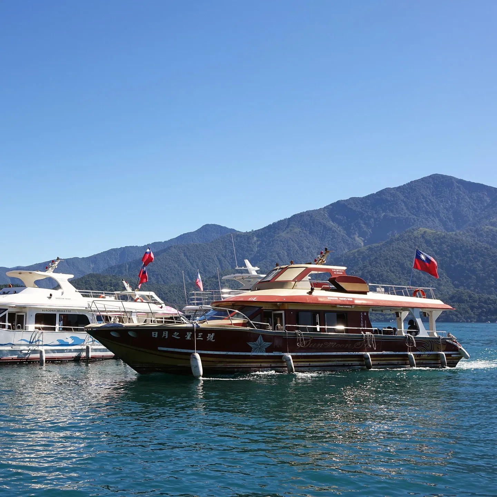
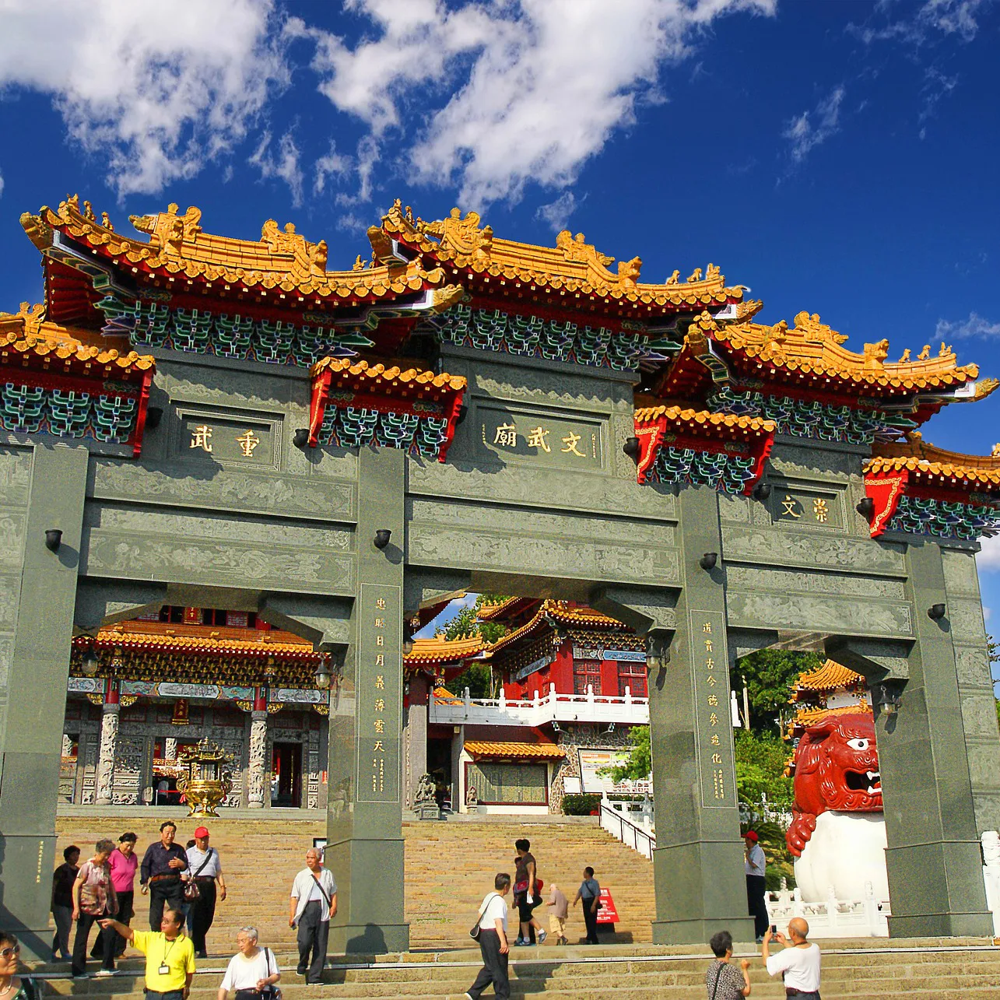
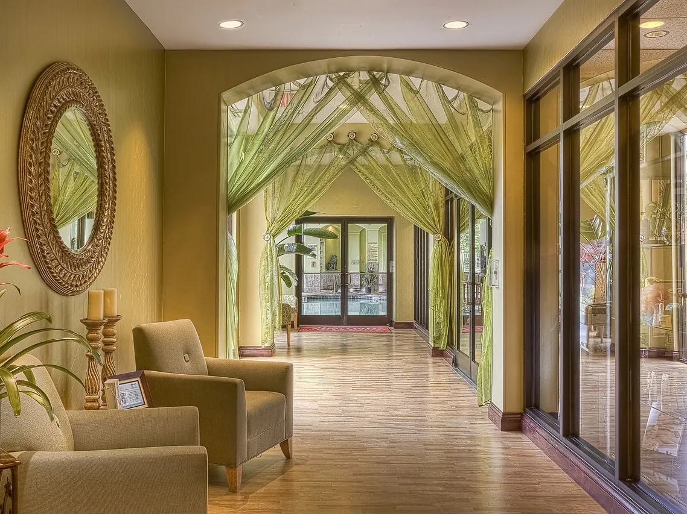
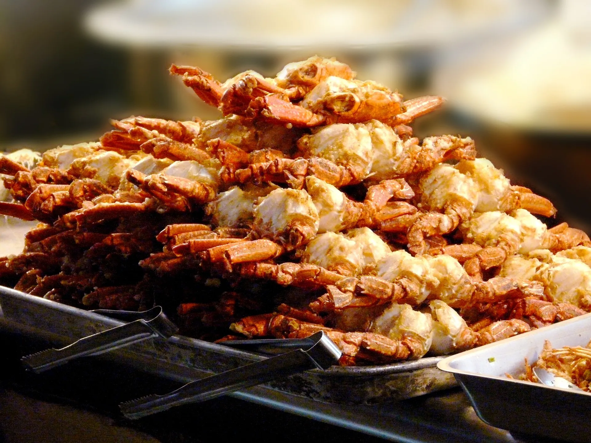

日月潭
日月潭是台灣最大的人工淡水湖泊，位於台灣中部南投縣，被譽為「台灣之心」。
日月潭的名字源自於其狀似日、月兩個圓形的湖泊，分別代表著陽光和月光。潭周邊的環湖公路，是非常受遊客歡迎的景點之一。湖上的船隻更是不可錯過的交通工具，您可以搭船遊湖，有四個碼頭分別搭乘，分別是水社碼頭，玄光碼頭，伊達邵碼頭以及朝霧碼頭。

日月潭文武廟
文武廟位於向山村，距離日月潭附近，日月潭旁的文武廟是一座歷史悠久的廟宇,有兩間廟宇，一為龍鳳宮一為益化堂，興建閩南燕脊式三川廟宇供奉兩廟的神祇，因祭祀文武眾神甚多統稱文武廟。廟中主要供奉文昌帝君（文昌神）和武財神。 廟宇建築風格典雅，採用傳統的中國廟宇建築特色，包括彩繪的雕龍、瑞獸、濃墨重彩的斗拱、神獸等元素，展現了中國傳統藝術的精髓。
日月潭旅游注意事项 向山行政暨游客中心
行政暨逰客中心是旅遊目的地的一個重要設施，提供遊客各種有關當地的資訊、地圖、導覽和服務。 提供當地即將舉辦的活動、節慶等資訊，方便遊客參與
日月潭住宿小帮手 日月潭住宿小帮手
進房時間、退房時間、室內一律禁止抽煙酗酒、貴重的物品須小心保管、房價及加人加床服務、可免費入住小朋友.檢查房間設施，查看逃生線路

日月潭美食 日月潭美食
日月潭魚頭、鱸魚餐、蝦仁料理等。這些菜品以當地新鮮的湖泊食材製作，味道鮮美。米干是一種台灣傳統的米食，是用米漿製作的綠色條狀食品,日月潭紅茶：日月潭周邊也是台灣茶區之一，您可以品嚐到當地製作的高品質紅茶。有些茶葉農場和茶館可能提供茶葉品嚐和解說。還有阿婆茶葉蛋也是必買的喔!
